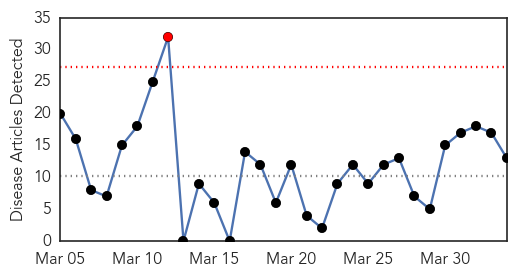
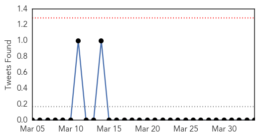
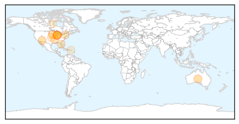

Influenza
30-Day Web Trend
1 alerts, 0 warnings

30-Day Twitter Trend
4 alerts, 0 warnings

Article Locations
Article Confidences
Top Articles:
- 0.998
- Quadrivalent flu vaccine protect against more strains
- 0.989
- Banner Health lifts visitor restrictions at all facilities
- 0.978
- Avian flu discovered in Nobles County
- 0.954
- Canine flu closes Evanston 'pet hotel'
- 0.859
- Officials warn about canine flu outbreak after 5 dogs die in Chicago area
- 0.826
- Dog flu hits Chicago; concern spreads to McHenry County, but not virus
- 0.751
- April 3, 2015 Archives
- 0.751
- April 2, 2015 Archives
- 0.751
- April 2, 2015 Archives
- 0.676
- Deadly bird flu strikes 5th Minnesota turkey farm
- 0.581
- Local veterinarians warn of dangerous dog respiratory diseases
- 0.522
- PetSmart Closes Three Chicago-Area PetsHotels to Protect Pets from Spread of Canine Influenza
- 0.509
- In response to canine influenza, Chicago-area Petco and Unleashed by Petco to suspend adoption events, dog training and puppy playtime activities; Pooch Hotel to close area boarding facilities
Top Tweets:
- 0.579
- Induction of Influenza (H5N8) Antibodies by Modified Vaccinia Virus Ankara H5N1 Vaccine http://t.co/vzU1yU4nO3
- 0.500
- EMERGENCE OF A NOVEL CLUSTER OF INFLUENZA A(H5N1) VIRUS CLADE 2.2.1.2 WITH PUTATIVE HUMAN HEALTH IMPACT IN E http://t.co/fBlN4r54oO
Hepatitis
30-Day Web Trend
0 alerts, 0 warnings
30-Day Twitter Trend
1 alerts, 0 warnings

Article Locations
Article Confidences

Top Articles:
Top Tweets:
-
No tweets found for Apr 03, 2015